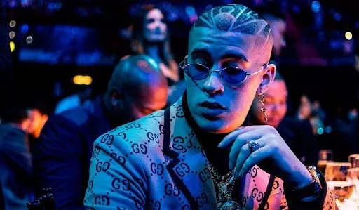
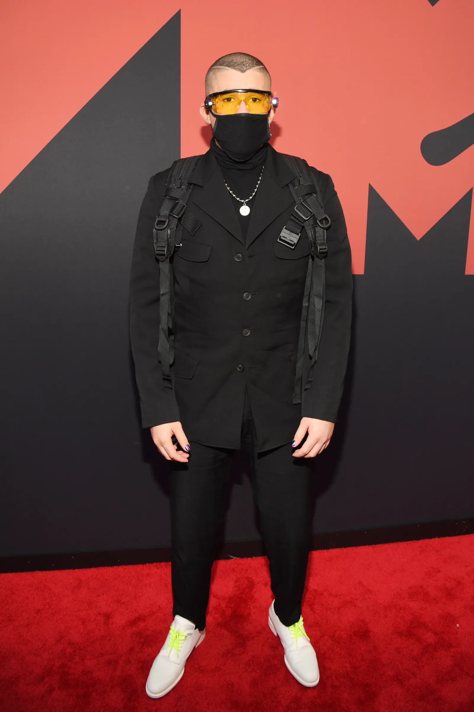
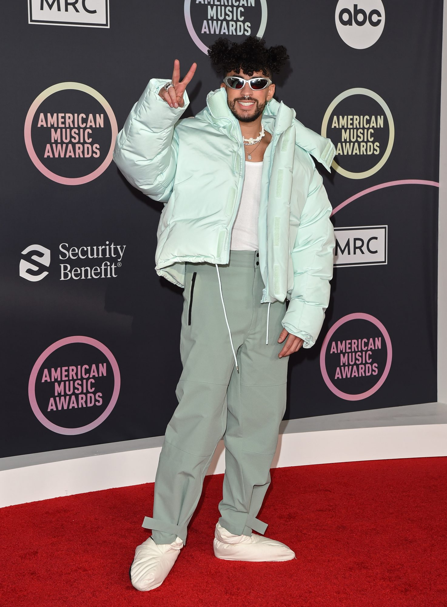
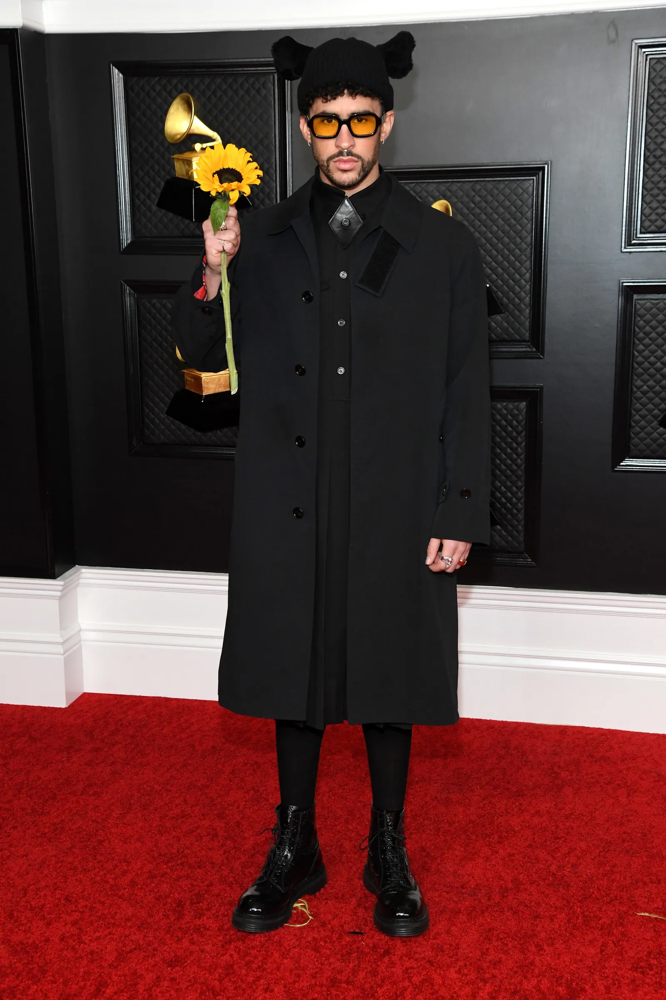

Bad Bunny

Benito Antonio Martínez Ocasio (Almirante Sur, Vega Baja, 10 de marzo de 1994), conocido artísticamente como Bad Bunny, es un rapero, cantante, compositor y actor puertorriqueño. Su estilo de música es generalmente definido como trap latino y reguetón, pero también ha interpretado otros géneros como rock, kizomba y soul. Se caracteriza por su entonación grave y rasposa y su estilo de vestir. Empezó a ganar popularidad en SoundCloud y eventualmente firmó un contrato con un sello discográfico mientras trabajaba como empaquetador en un supermercado y estudiaba en la Universidad de Puerto Rico en Arecibo. Después del éxito de su sencillo «Soy Peor» en 2016, alcanzó la fama tras colaborar con los artistas Cardi B y Drake en los sencillos «I Like It» y «Mia» que alcanzaron el primer y tercer puesto en la lista Billboard Hot 100 respectivamente. Su álbum de estudio debut X 100pre (2018) ganó el Grammy Latino por Mejor Álbum de Música Urbana y entró en la lista de los 500 mejores álbumes musicales de todos los tiempos, según la revista Rolling Stone, ocupando el lugar 447.
Biografía
Benito nació el 10 de marzo de 1994 en Almirante Sur, Puerto Rico. Su padre, Tito Martínez, era un conductor de camiones, y su madre, Lysaurie Ocasio, una retirada maestra de inglés. Su madre solía escuchar canciones de salsa, merengue y baladas, como la de Juan Gabriel Abrázame muy fuerte, mientras que Bad Bunny ayudaba con los coros. Martínez creció en las playas de Puerto Rico, en la comunidad de Vega Baja, con sus padres y dos hermanos menores, Benie y Bysael, a quien considera ser de sus mejores amigos. Él declaró ser criado en un hogar feliz, diciendo que "no era de los chicos que solían andar en la calle, me gustaba estar en casa con mi familia".
Queriendo ser un cantante desde los 5 años, atendía la iglesia junto a su madre cuando era niño y cantaba en el coro hasta los 13 años. Después de dejar el coro, desarrolló intereses por artistas que sonaban en la radio, como Daddy Yankee y Héctor Lavoe. Su primera presentación como solista fue cuando interpretó la canción de Juanes Mala gente en un show de talentos escolar. Su nombre artístico proviene de una fotografía de su infancia en la que tiene puestas unas orejas de conejo y posa con un rostro de pocos amigos. A pesar de ser tímido durante su tiempo en la secundaria, Benito solía hacer freestyles para entretener a sus compañeros de clase, desarrollando una reputación en su escuela por su creatividad y humor. Sus intereses en su adolescencia incluyeron el skateboarding y la lucha libre profesional, de donde también sacó su estilo de moda.
Inicios
Comenzó a escribir y crear sus propias interpretaciones a sus 14 años, hasta que en 2013, empezaría a publicar sus canciones por medio de SoundCloud, entre ellas «Get» en 2013, «Tentación» en 2014, «Solo avísame» en 2015, entre otros. Mientras trabajaba como empaquetador en los Supermercados Econo en Vega Baja durante 2016, Bad Bunny lanzaba música como un artista independiente en SoundCloud, donde su canción «Diles» llamó la atención del productor DJ Luian quien lo contrató para su sello discográfico Hear This Music. DJ Luian introdujo a Bad Bunny al equipo de productores Mambo Kingz, quienes estaban intrigados por la experimentación de la música y la moda de Benito. Desde entonces, él logró entrar varias veces a la lista de Estados Unidos Hot Latin Songs. Su primer éxito, el sencillo «Soy peor», alcanzó el puesto 22 en la lista Hot Latin Songs y estableció a Bad Bunny como un pionero en la escena del trap latino. Diez meses después de la publicación del video oficial de «Soy peor», alcanzó las 330 millones de reproducciones en YouTube. Su canción «Krippy Kush» junto a Farruko y el productor Jamaicano Rvssian también fue un éxito.
Imagen
Su sentido de la moda ha sido destacado por los medios de comunicación. Vanessa Rosales, de la CNN, opinó que "en rosa, flores y pantalones cortos, Bad Bunny defiende una nueva masculinidad". Según Vogue, Bad Bunny es un "conocido fanático de las gafas de sol". El rapero bromeó una vez diciendo que poder llevar gafas de sol por la noche era una motivación clave para convertirse en artista. Su comportamiento tan variante de género está a la vista en muchos de sus vídeos, y cuando, en las galas de premios, aparece con las uñas largas, bien cuidadas y pulidas. Ben Beaumont-Thomas, de The Guardian, opinó en 2020 que su estilo influyó en otros artistas latinos, que "a menudo comparten su colorida mezcla de ropa de calle y sastrería". En el vídeo de su sencillo «Estamos bien», se ve a Bad Bunny disfrutando de su tiempo con sus amigos, y luego puliendo sus uñas con un esmalte de color púrpura y secándolas con un soplador. Su video para «Yo perreo sola» muestra al artista actuando en versión drag. Su sentido de la moda también está influenciado por su interés por el skateboarding cuando era adolescente. Tras entrevistarlo en 2018, los entrevistadores de NPR Félix Contreras y Jasmine Garsd dijeron que una de las cosas que más les llamó la atención fue su humildad.
  Álbumes de estudio
 2018: X 100pre
2018: X 100pre
 2020: YHLQMDLG
2020: YHLQMDLG
 2020: El último tour del mundo
2020: El último tour del mundo
 2022: Un verano sin ti
2022: Un verano sin ti